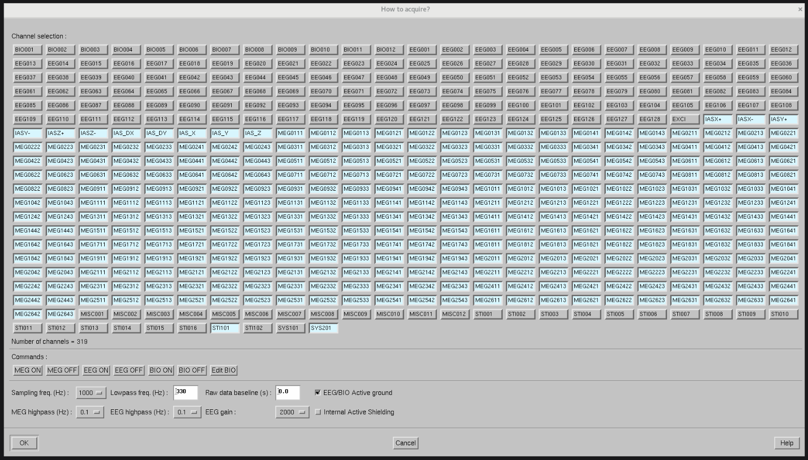

MEG settings🔗
The MEG’s settings can be edited on the acquisition software on the DACQ computer. The sampling rate, the channel selection and the internal active shielding can be edited directly on the GUI.
Sampling rate🔗
The MEG default sampling rate is 1 kHz, but it can be changed to 2 kHz, 3 kHz, 4 kHz or 5 kHz. In practice, there is no reason to increase the sampling rate (which will also increase the file size) except if an analog signal requiring this sampling rate is measured on the miscellaneous channels.
Channel selection🔗
The channel selection should be verified before every acquisition. By default, the selection is set to:
{kind=link}

Common changes include:
Disable the unused IAS channels
Enable
STI102. See STI101 and STI102 for more information.Enable individual binary
stimchannels. See binary vs combined channel for more information.Enable EEG channels
Enable bipolar channels
Internal Active Shielding (IAS)🔗
Internal active shielding is used to compensante environmental noise through magnetic fields induced in 6 coils in the walls, floor and ceiling of the magnetically shielded room (MSR). On our site, the environmental noise is very low. Thus it is recommended to keep the internal active shielding disabled.
The 6 coils can compensante the homogeneous fields \(B_x\), \(B_y\), \(B_z\) and the diagonal uniform gradients \(\frac{\partial{B_x}}{\partial{x}}\), \(\frac{\partial{B_y}}{\partial{y}}\), \(\frac{\partial{B_z}}{\partial{z}}\). The coils emit a magnetic fields which drives 18 magnetometers to 0:
In the
x+direction (right of the helmet): 1311, 1321, 1331, 1341In the
x-direction (left of the helmet): 0211, 0221, 0231, 0241In the
y+direction (front of the helmet): 0811, 0812In the
y-direction (rear of the helmet): 2111, 2121, 2131, 2141In the
zdirection (top of the helmet): 0711, 0721, 0731, 0741
Note
Note that those 6 coils are inside the MSR and thus add an interference source inside the MSR. Recordings using internal active shielding must use MaxWell filter to restore the original field pattern.
The IAS compensation channels can be recorded and include:
The current through the individual coils, in room coordinate:
IASX-,IASX+,IASY-,IASY+,IASZ-,IASZ+.The virtual compensation channel which represents the feedback required to cancel the uniform field and the diagonal gradient components, in head coordinate:
IAS_X(\(B_x\)),IAS_Y(\(B_y\)),IAS_Z(\(B_z\)),IAS_DX(\(\frac{\partial{B_x}}{\partial{x}}\)),IAS_DY(\(\frac{\partial{B_y}}{\partial{y}}\)).
Note
IAS_DZ is missing because according to Maxwell’s equation there are only 2
independent diagonal uniform gradient components since the sum of the diagonal
gradients is equal to 0:
\(\frac{\partial{B_x}}{\partial{x}} + \frac{\partial{B_y}}{\partial{y}} +
\frac{\partial{B_z}}{\partial{z}} = 0\)
Coil type🔗
Previous generation MEGIN system have a different magnetometer coil size compared to new
generations. Our MEG system has the type 3024 FIFFV_COIL_VV_MAG_T3 and correctly
saves the type in the FIFF recordings. If in doubt, check that the magnetometer coil
type is correct and is not set to 3022 FIFF.FIFFV_COIL_VV_MAG_T1 or 3023
FIFF.FIFFV_COIL_VV_MAG_T2. MNE-Python has a convenience function to
check and fix the coil type if needed, accessible through the function
mne.channels.fix_mag_coil_types() or through the Raw object method
mne.io.Raw.fix_mag_coil_types().
Note
The effect of the difference between the coil sizes on the current estimates is very small. Therefore, fixing the coil type is not mandatory.
Signal Space Projector🔗
Signal-Space Projection (SSP)[1] is a way of estimating a projection matrix to remove noise from a recording by comparing measurements with and without the signal of interest. Every recording is shipped with a set of SSP tailored for our site, available here. Specifically, these projectors were obtained by combining projectors for the obtained from the wideband PCA and from the narrowband PCA (bandpass filter between 15 and 18 Hz). The narrowband PCA improves the correction of the 16.7 Hz artifact, typical from a 15 kV AC railway electrification system.
See also the tutorial on how to re-compute the Signal Space Projectors (SSP) from an empty-room recording.